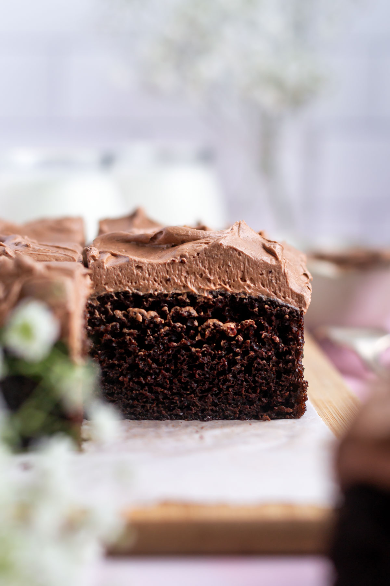

Chocolate Cake

Description
This is my favorite chocolate cake recipe
Ingredients
- 1 cup plain flour
- 1/2 cup natural unsweetened cocoa powder
- 1 cup granulated sugar
- 1 teaspoon baking soda
- 1/2 teaspoon baking powder
- 1/2 teaspoon kosher salt
- 2 large eggs
- 1/2 cup buttermilk
- 1/4 cup vegetable oil
- 2 teaspoons pure vanilla extract
- 1/4 cup hot water
Steps
- Pre-heat oven to 350F and prepare an 8x8 pan
- In a medium size bowl sift the dry ingredients
- In a small bowl whisk the eggs with the buttermilk, oil and vanilla until smooth and emulsified
- Add the wet ingredients to dry then add hot water, whisking until combined. Pour into the pan
- Bake for 25-30 minutes